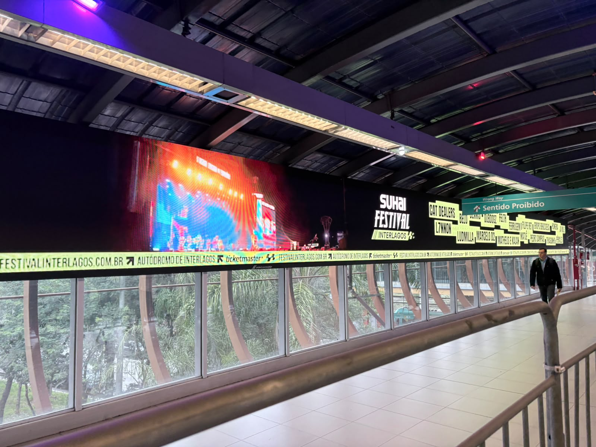
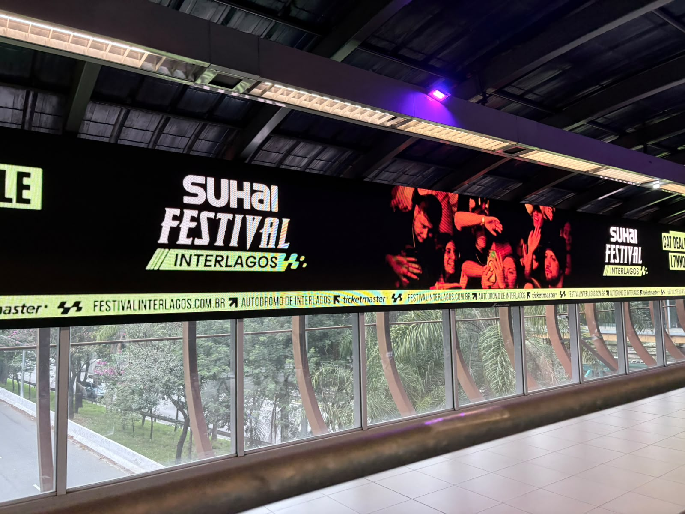
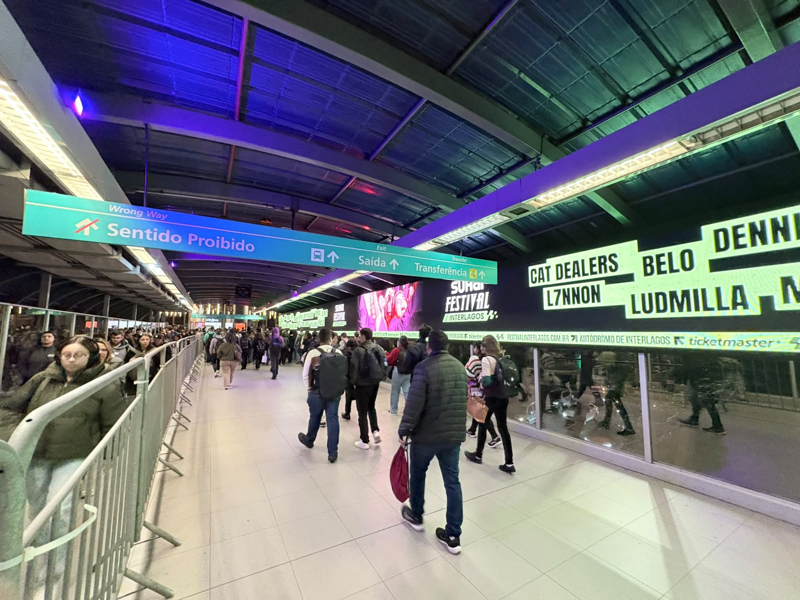
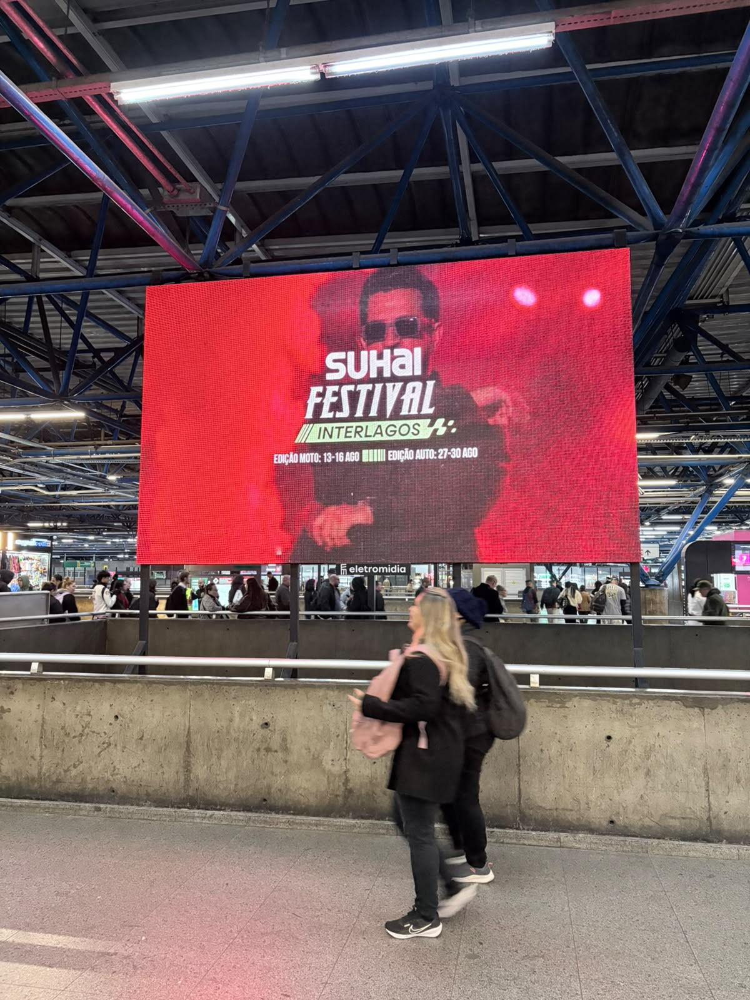
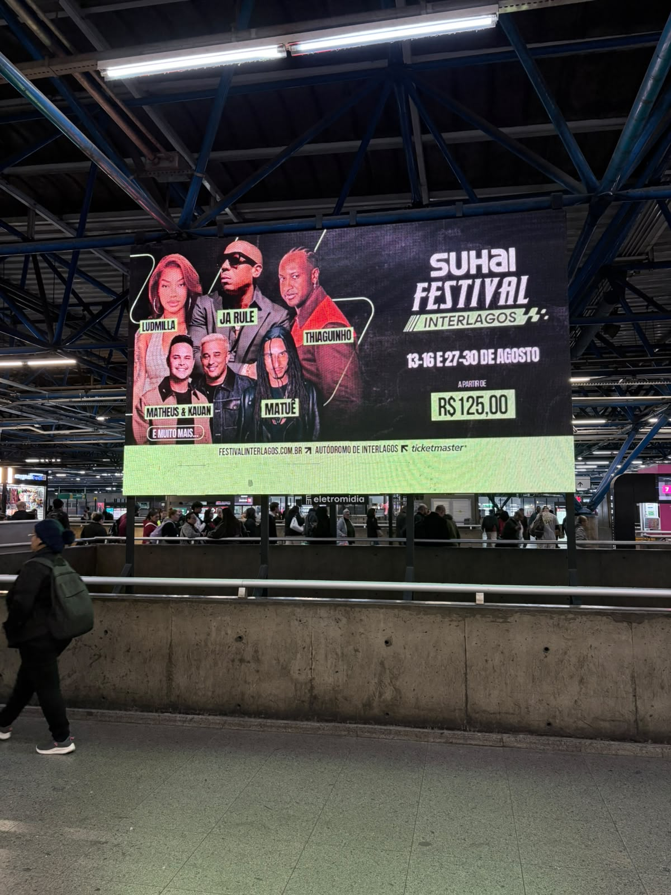
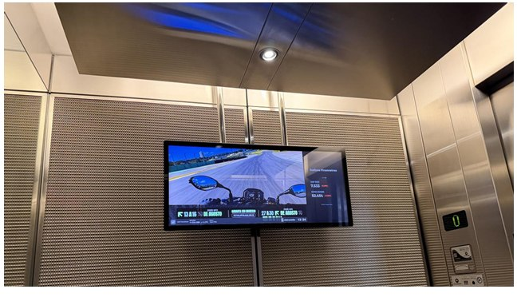
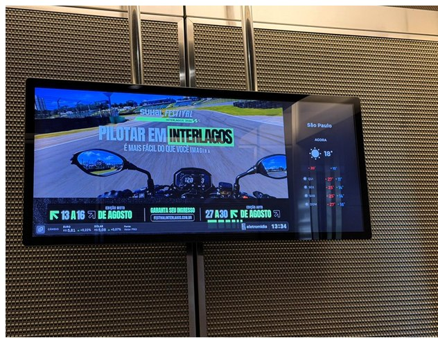

Impactos no período
20.940.486
Transportes 20,16 mi + Elevadores 776 mil
Prova em vídeo e foto, capturada ao vivo nas telas: passarela de Pinheiros, estação Palmeiras-Barra Funda e 13 prédios corporativos da Faria Lima.







| Prédio | Endereço | Exibições previstas |
|---|---|---|
| Birmann 32 · Premium | Av. Brigadeiro Faria Lima, 3732, Itaim Bibi | 100.800 |
| Faria Lima Tower | Av. Brigadeiro Faria Lima, 3064, Jardim Paulistano | 75.600 |
| Faria Lima Plaza · Premium | Av. Brigadeiro Faria Lima, 949, Pinheiros | 75.600 |
| Faria Lima Financial Center · Premium | Av. Brigadeiro Faria Lima, 3400, Itaim Bibi | 65.520 |
| JK 1455 · Premium | Av. Pres. Juscelino Kubitschek, 1455, V. N. Conceição | 60.480 |
| Infinity Tower · Premium | R. Leopoldo Couto de Magalhães Jr., 700, Itaim Bibi | 60.480 |
| Faria Lima Square · Premium | Av. Brigadeiro Faria Lima, 3600, Itaim Bibi | 50.400 |
| FI 4440 · Premium | Av. Brigadeiro Faria Lima, 4440, Itaim Bibi | 45.360 |
| Faria Lima Corporate · Zabo | R. Santa Justina, 660, Vila Olímpia | 45.360 |
| Birmann 31 | Av. Brigadeiro Faria Lima, 3900, Itaim Bibi | 45.360 |
| Helbor Lead Offices Faria Lima | R. Prof. Atílio Innocenti, 474, V. N. Conceição | 40.320 |
| Faria Lima Square Offices | R. Cardeal Arcoverde, 2450, Pinheiros | 40.320 |
| New Work Offices Services | R. Pais de Araújo, 29, Itaim Bibi | 35.280 |
| Faria Lima Offices | R. Cardeal Arcoverde, 2365, Pinheiros | 35.280 |